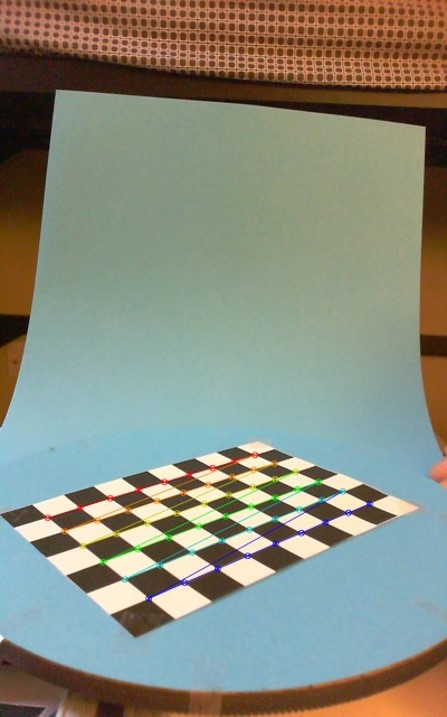

3D Object Reconstruction
Joey Jackson - ejackson61Corey Zheng - czheng45
Matthew Fraschilla - mfraschilla3
Chris O’Brien - cobrien42
Fall 2018 CS 4476 Intro to Computer Vision: Class Project
Georgia Tech
Abstract
The goal of this project is to be able to generate 3D models of real world objects by applying various computer vision algorithms on a set of images taken of the object from known world positions. Creating representations of the physical world in computers is a useful tool for further processing in graphics and simulations, so our project describes a method to easily automate the construction of a model of the structure of a physical object in a form easily processed by other programs. Our application is able to generate a collection of 3D space filling cubes at a specified resolution whose structure and configuration represents the real world object. Typically, the higher the resolution that application is set, the closer the model resembles the real world object when rendered.Teaser Figure


Introduction
3D modeling of objects through vision is a powerful tool that can help decrease the effort needed to recreate models for use in graphics, vision, and engineering. Computer vision techniques can be applied to create 3D representations of objects through images using even basic equipment.There are currently many methods of 3D object reconstruction that generate models using depth maps from active rangefinding equipment and special 3D cameras. However, the approach used in this application only requires a standard camera that will be calibrated in the location that the object images will be captured.
The goal of the project is to create a 3D computer model of an object given multiple images of the object from known world positions and orientations. A camera calibration matrix that is generated from calibrating the camera in a controlled rig will contain and facilitate the transfer of the position and orientation information within the application. To use the application, a user will provide an object and place it inside of the controlled camera rig, which will allow the object to rotate on a turntable in front of the camera and have pictures taken from known positions. This process will simulate the camera revolving around the object. These images and coordinates (as a calibration matrix) can then be used as input to generate a 3D computer model of the object. The output will then be a set of 3D cubes in world positions whose collective positioning represent the object the user provided. The general approach used is based off the approach described in Fitzgibbon, Cross, and Zisserman’s paper Automatic 3D Model Construction for Turn-Table Sequences. However, our approach is slightly different whereas they used an uncalibrated camera and unknown turntable rotation angles, our application uses a camera that is pre calibrated at a set of known rotation angles of the turntable in order to very accurately convert between pixel and world coordinate systems. The full approach is described in the next section.
Approach
1. Rig
The approach is centered around the use of an imaging rig for capturing precise and measured images of the object. The rig has a camera a fixed distance away from the object and a blue background behind the object, opposite the camera. The object sits on a blue turntable which can be rotated at measured 10 degree rotations allowing for a total of 36 images per object.2. Calibration
The first step in the application pipeline is to calibrate the camera in order to generate the camera matrix for each of the known turntable rotation angles which can be used to convert between 3D world space coordinates and 2D pixel space coordinates. This is done by placing a chessboard pattern on the turntable and labeling known the 3D world positions of the grid corners in pixel space. This collection of mappings between 3D positions and pixel space can then be used to create a camera matrix which hold the intrinsic matrix, some distortion constants, a rotation matrix, and a translation matrix for that particular view. This process was then repeated for each 10 degree rotation of the turntable to get new camera matrices (and therefore rotation and translation matrices) which were stored for each turntable view. Most of this functionality was implemented using functions in the OpenCV library.|  |
3. Object Segmentation
After the camera was calibrated, the actual object was placed in the rig and pictures were taken of it for each 10 degree rotation of the turntable. The next step was to generate a binary segmentation of the object from the background in the picture. An arbitrary background would have been more difficult and less accurate to segment which is why the blue background was added to make segmentation easier.Segmentation was done in a few steps. First the non-blue regions at the edges of the image were cropped away. Then a k-means segmentation was run on the image in order to decrease the variation in colors. Each pixel was replaced by the centroid of the nearest cluster after clustering the pixel values of the image into k clusters. After some experimentation, a k value of 8 seemed to produce the most accurate results for the objects we were testing. The final segmentation was produced by running the grabcut algorithm on this reduced color image. The grabcut algorithm essentially creates a graph out of the pixels of the image and then attempts to find a minimum average cut through the graph to divide it into 2 disconnected components. In this case, this meant the algorithm would cut away the blue segmented region around the object, leaving only the outline of the object as a binary image. Many of the binary images had some speckles in the middle of the body of the object so a closing filter was run on the binary image in order to fill in those holes for a more accurate segmentation.
4. Cube Projection and Overlap Testing
The next step in the pipeline was to use a set of candidate cubes (hypothetical 3D points), which could possible be within the volume of the actual object, along with the camera matrices that were generated before to project these cubes into pixel space. This cube projection was then compared with the segmentation of the original object for overlap, and this process was repeated for each of the 36 views of the object on the turntable. If the cube overlapped the segmentation of the object in all views, then the cube is considered to be within the volume of the object and is saved, otherwise it is discarded. |
 |
5. Octree Recursion
The final step of the process was to refine the search for candidate cubes. Instead of searching for cubes randomly throughout space, a recursive octree solution was used. At first, very large cubes were tested that filled up the sample space. At each step, if a cube was discarded, then it was ignored. However, each cube that still intersected the object was divided into 8 smaller cubes which were each tested again, further improving the granularity of the model. This process can be continued indefinitely until the model is as precise as desired.| Rubik's Cube | Hex Wrench Set | Spray Can | |
|---|---|---|---|
| Actual | |||
| Resolution 0 |  |
 |
|
| Resolution 2 | |||
| Resolution 4 | |||
| Resolution 6 |
Experiments and results
For our experiments, we attempted to model five different objects to test the accuracy of the application. We modeled a rubik's cube, a rubik’s with some of the planes rotated, a spray bottle, 2 clothespins clipped together, and a set of hex wrenches. In order to to test the accuracy of the reconstruction for each of the objects, we measured the ground truth lengths of the objects in the x, y, and z dimensions and compared the percent error between the actual dimensions and those of the model at different resolutions.Ground Truth Dimensions:
- Rubik’s Cube: 57mm x 57mm x 57mm
- Rubik’s Cube Rotated: 81mm x 81mm x 57mm
- Spray Can: 25mm x 25mm x 100mm
- Clothespins: 80mm x 20mm x 77mm
- Hex Wrenches: 46mm x 34mm x 96mm
| Resolution 0 | Resolution 1 | Resolution 2 | Resolution 3 | Resolution 4 | Resolution 5 | Resolution 6 | |
|---|---|---|---|---|---|---|---|
| Rubik's | 100mm x 100mm x 100mm | 75mm x 100mm x 75mm | 62mm x 75mm x 62mm | 62mm x 62mm x 56mm | 62mm x 59mm x 56mm | 60mm x 59mm x 56mm | 60mm x 59mm x 56mm |
| Rubik's Rotated | 100mm x 100mm x 100mm | 100mm x 100mm x 75mm | 87mm x 87mm x 62mm | 81mm x 81mm x 62mm | 81mm x 81mm x 59mm | 79mm x 79mm x 57mm | 79mm x 79mm x 57mm |
| Spray | 100mm x 100mm x 100mm | 50mm x 50mm x 100mm | 37mm x 37mm x 100mm | 31mm x 25mm x 100mm | 31mm x 25mm x 100mm | 28mm x 25mm x 100mm | 27mm x 25mm x 100mm |
| Pins | 100mm x 100mm x 100mm | 50mm x 100mm x 100mm | 25mm x 87mm x 100mm | 25mm x 81mm x 93mm | 21mm x 78mm x 93mm | 21mm x 76mm x 92mm | 21mm x 76mm x 92mm |
| Hex Set | 100mm x 100mm x 100mm | 75mm x 50mm x 100mm | 62mm x 37mm x 100mm | 56mm x 31mm x 100mm | 56mm x 31mm x 100mm | 54mm x 28mm x 100mm | 54mm x 26mm x 100mm |
Errors
Accuracy of the application was determined by calculating the percent error between actual and modeled object dimensions.
X-Dimension
| Resolution 0 | Resolution 1 | Resolution 2 | Resolution 3 | Resolution 4 | Resolution 5 | Resolution 6 | |
|---|---|---|---|---|---|---|---|
| Rubik's | 75.44 | 31.58 | 8.77 | 8.77 | 8.77 | 5.26 | 5.26 |
| Rubik's Rotated | 23.46 | 23.46 | 7.41 | 0.00 | 0.00 | 2.47 | 2.47 |
| Spray | 300.00 | 100.00 | 48.00 | 24.00 | 24.00 | 12.00 | 8.00 |
| Pins | 400.00 | 150.00 | 25.00 | 25.00 | 5.00 | 5.00 | 5.00 |
| Hex Set | 117.39 | 63.04 | 34.78 | 21.74 | 21.74 | 17.39 | 17.39 |
Y-Dimension
| Resolution 0 | Resolution 1 | Resolution 2 | Resolution 3 | Resolution 4 | Resolution 5 | Resolution 6 | |
|---|---|---|---|---|---|---|---|
| Rubik's | 75.44 | 75.44 | 31.58 | 8.77 | 3.51 | 3.51 | 3.51 |
| Rubik's Rotated | 23.46 | 23.46 | 7.41 | 0.00 | 0.00 | 2.47 | 2.47 |
| Spray | 300.00 | 100.00 | 48.00 | 0.00 | 0.00 | 0.00 | 0.00 |
| Pins | 25.00 | 25.00 | 8.75 | 1.25 | 2.50 | 5.00 | 5.00 |
| Hex Set | 194.12 | 47.06 | 8.82 | 8.82 | 8.82 | 17.65 | 23.53 |
Z-Dimension
| Resolution 0 | Resolution 1 | Resolution 2 | Resolution 3 | Resolution 4 | Resolution 5 | Resolution 6 | |
|---|---|---|---|---|---|---|---|
| Rubik's | 75.44 | 31.58 | 8.77 | 1.75 | 1.75 | 1.75 | 1.75 |
| Rubik's Rotated | 75.44 | 31.58 | 8.77 | 8.77 | 3.51 | 0.00 | 0.00 |
| Spray | 0.00 | 0.00 | 0.00 | 0.00 | 0.00 | 0.00 | 0.00 |
| Pins | 29.87 | 29.87 | 29.87 | 20.78 | 20.78 | 19.48 | 19.48 |
| Hex Set | 4.17 | 4.17 | 4.17 | 4.17 | 4.17 | 4.17 | 4.17 |
As seen in these results, the accuracy improves as the resolution of the model is increased. However, increasing the resolution also exponentially increases the runtime of the program, so there is a tradeoff for the improved accuracy. In our experimentation, we found that a max resolution of 5 (at most 5 splits of a starting cube) provided the best results within a reasonable runtime. The charts above show how well the application reproduces measurements, but to see how well the shape of objects is reproduced, it is easier to observe a rendered model qualitatively as can be seen in the qualitative results section. The application performed well above our expectations with a generally very low error rate when a reasonable resolution was used.
Qualitative Results
Here are a few example inputs and outputs of the application. |
|
 |
 |
 |
|
 |
|
 |
Conclusion and Future Work
Overall, this 3D reconstruction method performed well for most of the tested objects. Our approach is slightly different from the one laid out in the midterm project update which was to reconstruct the object by creating a point cloud of identified feature points in 3D space. However, we could not get very accurate results with the point cloud method because of noise in the feature detectors which had to be filtered out. We figured that using segmentation to identify the presence of an object in general (as opposed to features of the object) would not only make the problem simpler but also provide a more useful representation than a point cloud, and so we changed our approach to this method. The overall goal of reconstructing a 3D model of an object using multiple camera views was fulfilled by our solution.There were some issues with our approach that can be seen especially well in the rubik's cube example. Some noisy or hard to segment images resulted in internal cubes being labeled as external and as a result the 3D models could possibly contain holes and rough edges that did not exist in the actual objects. These errors could potentially be solved in future work using better object segmentation algorithms, potentially with the help of machine and/or deep learning techniques. Even for objects that our project performed fairly well on, the resulting 3D objects still contain many rough edges as a result of being formed by many small cubes. One topic that we would have liked to implement was octree smoothing similar to the Marching Cubes algorithm provided by Lorensen et al. Additionally, rather than only recreating the object’s shape, preserving color or texture from the original object in the 3D model would be a topic that should be explored in future work.
As stated previously, 3D object reconstruction has many useful applications in graphics, engineering, simulation, virtual reality, and augmented reality. This is just one such approach that could be used in those domains.
References
Source Code: https://github.com/joeyjackson/object-reconstruction-3d/OpenCV Library: https://github.com/opencv/opencv
Automatic 3D Model Construction for Turn-Table Sequences: https://www.robots.ox.ac.uk/~vgg/publications/1998/Fitzgibbon98a/fitzgibbon98a.pdf